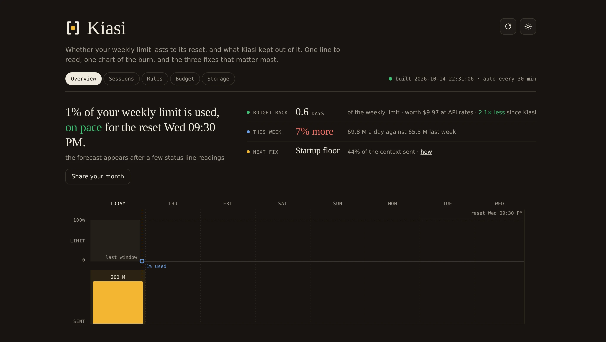

ki·a·si
Swahili for measure. A Claude Code plugin, MIT, that runs on your machine.
Your weekly limit is spent re‑reading.
Your coding agent re-reads the whole conversation on every step. Kiasi keeps noisy tool output out of it, and saves the full text on disk.
/plugin marketplace add raj-rangani/kiasi- MIT licensed
- No dependencies
- No network calls
- Runs on your machine
- Benchmark you can rerun
- One-line uninstall
Every step re-sends everything before it.
Scroll through one modelled turn, a step at a time.
- Step 1
You ask the agent to fix a failing test.
From here on, every step sends the whole conversation again.
- Step 3 · Read
It reads src/app.ts.
29,029 characters join the conversation, and go out again on every step after.
- Step 8 · pytest
It runs the tests. 905 lines come back.
Claude Code alone keeps a 10,000-character head and tail, with no path to the rest.
- Step 15 · Read
It reads the same file again.
Nothing in it changed. Another 29,029 characters ride along.
- Step 24
907,724 tokens re-read in one turn.
Each step paid again for everything before it.
- With Kiasi
The same turn, 105,603 tokens lighter.
The test log arrives as 2,082 characters with a path to the full log. The second read becomes a 245-character pointer.
- your messages
- tool output
- kept out by Kiasi
A modelled turn, not a measurement. Each step also carries about 22,000 tokens of Claude Code's own setup.
Three fixed rules. No model in the loop.
Whatever Kiasi cuts is saved in full, and the agent is told where to find it.
-
Rule 1
A long test log becomes a digest
The agent gets the errors, the start and the end. The rest waits on disk.
2,082characters sent, not 10,000 -
Rule 2
A file read twice is skipped
If the file hasn't changed, the agent is pointed at the copy it already has.
245characters sent, not 29,029 -
Rule 3
A runaway turn is paused
At 60 steps the turn pauses, the task is saved to a file, and you choose what happens next.
60steps, then a pause
Also in the box: your 5-hour and weekly limits in the status line, and compaction that keeps your task. Everything else is in the README →
Less context per request. Mostly from one setting.
The turn above is noisy on purpose. Over 30 days of real work on one developer's machine, context per request fell 2.1× against the days before Kiasi. Most of that comes from the 200k compaction window Kiasi sets on a 1M-context model. The cuts themselves kept out about 5%.
Compared with Claude Code alone.
Nine tool outputs, each run through Kiasi's real code. On three of them, Claude Code alone sends less, and they're listed too.
- Loading the nine rows…
Synthetic outputs, on a log scale. Open a row to see what each side sends.
python3 scripts/benchmark.pySee it on your own numbers.
The dashboard compares your days with Kiasi against your days before, read from your own transcripts. It only runs on 127.0.0.1.

Months people posted
No months posted yet.
In the dashboard, open Your month and click Post on the results page. The card holds totals only, and it is read before it goes up.
Two lines, then one command.
# in Claude Code /plugin marketplace add raj-rangani/kiasi /plugin install kiasi@kiasi # restart Claude Code, then /kiasi:limits setup ✓ done, dashboard at http://127.0.0.1:8787
# in the Claude Code panel /plugins → Marketplaces → add raj-rangani/kiasi → Plugins → Install # restart when asked, then /kiasi:limits setup ✓ done, dashboard at http://127.0.0.1:8787
Needs Claude Code 2.1.283+ and Python 3.8+. Works on any plan.
Asked first.
Does the agent lose anything it needs?
No. Everything Kiasi cuts is saved in full, and the agent is told the path. A skipped re-read points at the copy already in context.
How is this different from rtk or caveman?
rtk shortens shell output, and caveman makes Claude write shorter replies. Kiasi also covers file reads, MCP results, web pages and pastes, and it measures itself against what Claude Code alone sends. JetBrains' paired test found most of rtk's advertised saving didn't reach the bill (their write-up). Kiasi hasn't had a paired test yet. That's next.
Does anything leave my machine?
No. Kiasi has no dependencies and makes no network calls. Its reports hold counts and sizes, never what you typed.
What does it change in my settings?
Two keys in
~/.claude/settings.json, the 200k compaction window and the pruner switch, plus a status line entry./plugin uninstall kiasi@kiasiputs them back.
Make this week's limit last.
Kwa kiasi is Swahili for “in moderation”.
/plugin marketplace add raj-rangani/kiasi